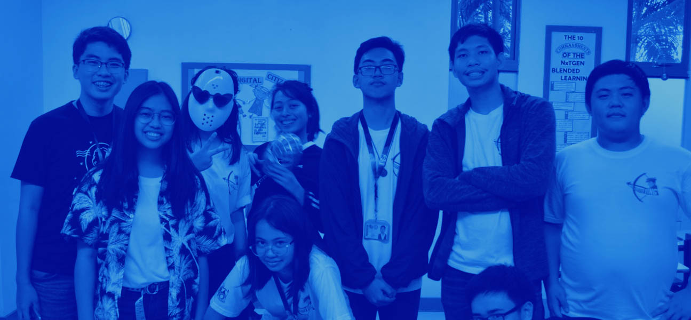

Developh is a global technology non-profit that seeks to nurture
youth innovation through accessible computer science education,
opportunity, and a united, student community. We believe in bringing the underrepresented youth forward in technology, refactoring the tech pipeline to lead to an industry with the representation of the people it builds for to forward inclusive, impact-oriented innovation. Serving students as early as in middle school, we empower, educate, and invest in students to pursue social impact ventures and career paths in technology.
Our organization executes programs and initiatives across education, advocacy, and community through our accessible, online platform and across our network of chapters in high schools and universities.
Find us on our open-source education initiative, our venture portfolio open to student fellows, our board of resources and funding for students interested in startups and tech, or through our conventions, conferences, workshops, and more! Since our founding in 2016, we support over 550 members with a reach of over 60,000
people in 10+ countries.
Primarily serving developing countries and communities, Developh recognizes the importance of a peer-filled community in motivating students to pursue technology and innovation and as a support system, education that is accessible, teachable, contextual, and inclusive of students from all backgrounds and walks of life, and opportunities that equip them to be students at day, and changemakers at night through technology. The organization is unique in its entirely student-led nature, focus on making tangible impact and creating whole projects, and nurturing both technical and soft skills.
Our Story
Founded in 2016 in a high school in Manila, Philippines—a group of students saw potential to make a difference in the world through technology. With every line of code coming closer to a solution (no matter how small), we sought to elevate student-led creation, build a network for student collaboration, and expose more students to build alongside them.
Most notably in the developing world, the overwhelming divide in education and resources deprives us of maximizing a culture of creation that could change the current state of affairs in the startup and tech realm. We realized that we want to be part of unleashing creation in every student, breaking barriers and building communities as we learn to build for the world.
Vision: The world molded by socially-impactful technology through the creative, innovative, and empathetic youth; in a realm of tech that mirrors the societies it creates for.
